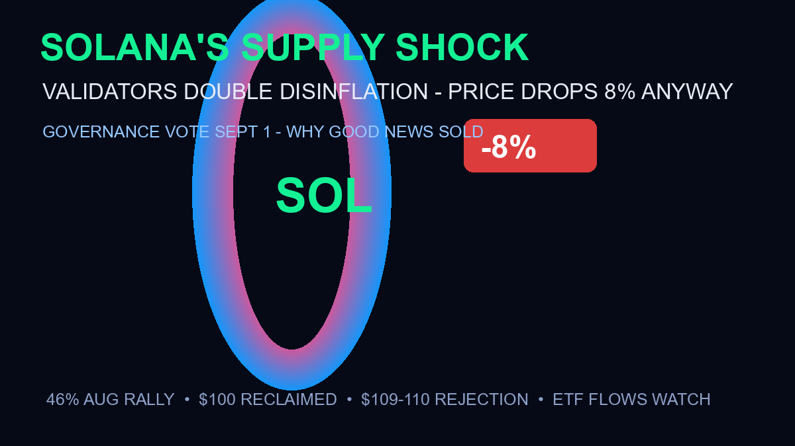

Solana’s Supply Shock: Validators Just Doubled SOL’s Disinflation — and the Price Dropped 8% Anyway

Solana’s validators just made SOL scarcer — and the market responded by selling it. A landmark governance vote approved on September 1 doubles SOL’s disinflation rate, tightening future supply growth (CoinMarketCap). The immediate reaction: an 8% price drop as whales and ETF flows headed for the exits. A supply cut is supposed to be bullish — so what happened?
The Quick Answer
- What happened: governance vote approved doubling SOL’s disinflation rate on Sept 1 — future supply growth tightens
- Price reaction: -8% on the day, with whale selling and ETF outflows leading (CoinMarketCap)
- Where SOL trades: ~$100–$105, after a 46% August rally was rejected at the $109–110 resistance (Perplexity Finance)
- The paradox: supply cuts are long-term bullish — but they arrived into a crowded, over-leveraged market that was already taking profits
Why “Good News” Got Sold
Three forces converged at exactly the wrong time. First, positioning: after a 46% August run, SOL was one of the most crowded trades in crypto — profit-taking was overdue regardless of news. Second, the macro backdrop: Warsh’s hawkish repricing (September hike odds near 60%) hit every long-duration asset simultaneously — SOL’s drop mirrors Bitcoin’s slide from $80K, not a Solana-specific failure. Third, the ETF flow mechanism: Solana ETFs that bought the August run found themselves underwater on the reversal — outflows beget outflows in the short window.
The disinflation vote itself is genuinely bullish long-term: less new supply entering the market means buying pressure has more impact per dollar. But supply mechanics work over months and years — they can’t stop a one-day positioning flush. In fact, the vote may have triggered the flush: “buy the rumor, sell the news” is the oldest pattern in crypto governance.
The Levels That Matter Now
Support: $100 is the psychological line — reclaiming and holding it keeps the August structure intact. Below that, $95 (the pre-rally breakout zone) is the next shelf. Resistance: the $109–110 zone that rejected the rally — a clean break above $110.69 (CoinDCX’s level) reopens the $115–120 range. The macro wildcard: September 30’s Fed decision hits SOL exactly like BTC — a delivered hike would likely flush $95 first, a hold would ignite the relief rally across all crypto.
What This Means for the ETF Story
Solana’s ETF flows have been the quiet bull case all summer — but this week exposed the mechanism’s double edge: ETFs amplify moves in both directions. When flows were positive, they extended the August rally; when whales turned, ETF selling accelerated the drop. The disinflation vote actually strengthens the long-term ETF case — scarcer supply + institutional wrappers is the Bitcoin-2024 playbook repeating on Solana. But short-term, expect choppy flows until the Fed decision clears.
Frequently Asked Questions
What did Solana validators vote for?
On September 1, 2026, validators approved a governance proposal that doubles SOL’s disinflation rate — tightening how quickly new SOL issuance declines, reducing future supply growth (CoinMarketCap).
Why did Solana drop 8% if the news was positive?
Three overlapping factors: profit-taking after a 46% August rally, the macro hawkish repricing from Fed Chair Warsh’s Jackson Hole keynote (which hit all risk assets), and ETF outflows accelerating the move. The supply cut is long-term bullish but couldn’t stop a positioning flush — classic “buy the rumor, sell the news.”
Is Solana still bullish after the price drop?
The structural case improved: scarcer supply plus growing ETF infrastructure is the Bitcoin-2024 playbook. Key levels: $100 support (hold = structure intact), $95 next support if lost, $109–110 resistance to reclaim. The September 30 Fed decision is the next major catalyst for all crypto.
Sources
- CoinMarketCap — validators double SOL disinflation rate (Sept 1), -8% price drop
- Perplexity Finance — $109–110 rejection analysis
- OpenPR — 46% August rally, InvestingHaven $52–150 projection
- CoinDCX — September outlook, $110.69 breakout level
- CoinStats — SOL near $105 governance-approved plan details